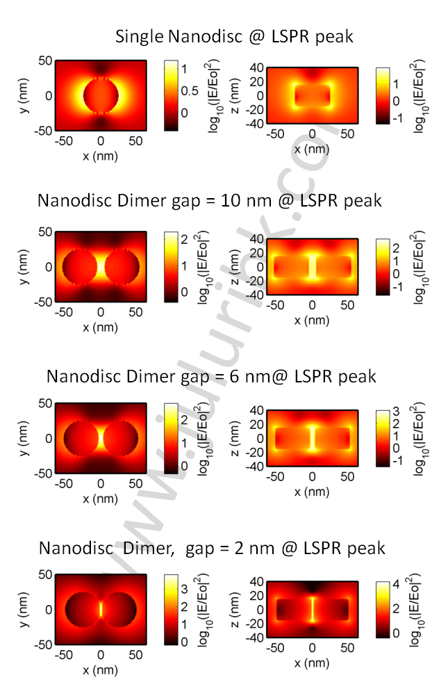

Electric Field in Metal Nanoparticle Dimers
Posted on Sat 09 April 2011 in Plasmonics
Metal nanoparticles exhibit localized surface plasmon resonance (LSPR). One can think of LSPR as resonance of electron sea oscillations driven by incident electric field. This is similar to the way a spring-mass system attains resonance under external periodic driving force.
The result of this plasmon resonance is enhanced dipole moment or charge separation, which leads to 1) large extinction (extinction is defined as sum of scattering and absorption) and 2) large electric field near the particle. Both of which are shape, size and surrounding dependent.
Researchers have taken advantage of this large electric field localization to enhance Raman signals from molecules and have lead to the field of Surface Enhanced Raman Spectroscopy (SERS) (more information here). Raman signal provides quantitative information of vibration modes in molecules and is proportional to the fourth power of electric field perceived by the molecule. Therefore large electric field structures are important for SERS. The real mechanism of SERS is still a topic of debate due to arguments of whether this effect is caused due to enhanced electromagnetic electric field (EM effect) or due to charge transfer effects (usually referred to CHEM effect).
Most researchers think that both of these arguments are valid and depend upon the system under consideration. Assuming electric field as an important requirement for SERS, one can think that nanostructures with large electric field should be better SERS candidates. This is very true and researchers have designed many geometries that can give large electric field. Another argument in SERS community is that not only large electric fields are important, it is equally important to get reproducible SERS signals from structures.
Of interest have been nanoparticle configurations that consist of two nanoparticles that are very close to each other (commonly referred as dimer nanoparticles). I have simulated electric fields (see figure below) using FDTD for both single nanoparticle and nanoparticle dimers with varying gap (here disks are used, but it is more or less true for any other geometry) at LSPR.

One can see,
-
Metal nanoparticle dimers have large electric field in the junction compared to single nanoparticles
-
Gap dependence on the electric field. As the gap reduces, electric field increases. The electric field intensity (|E/Eo|^2) goes from 2 orders to 4 orders of magnitude driving Raman enhancement factors (|E/Eo|^4) from 4 orders to 8 orders.
Not only large electric field is important for SERS, one has to also match the LSPR wavelength of these particles to the Raman excitation laser wavelength to get the best benefit out of dimers. This is tricky because gap also changes the plasmon resonances generally moving them to lower energy (nearly exponentially with gap). One can think of why they move to lower energy is due to increased restoring force between charge separations in individual nanoparticles making the system more easy to resonate. There is still a debate what happens at very small gaps when electrons start to tunnel between nanoparticles one can expect to see a LSPR move to higher energy instead of lower energy. This cannot be simulated by basic Maxwell equations as tunneling of electrons is not considered in them. Such cases require quantum treatment.